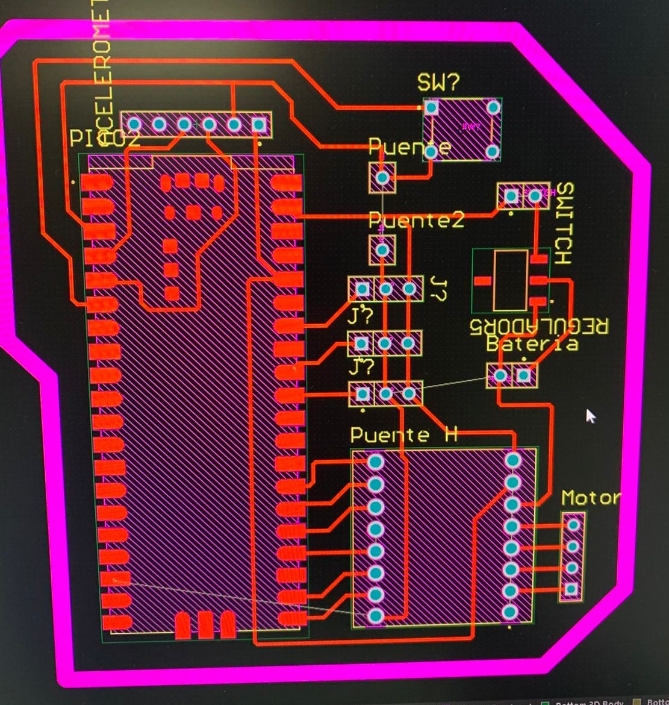
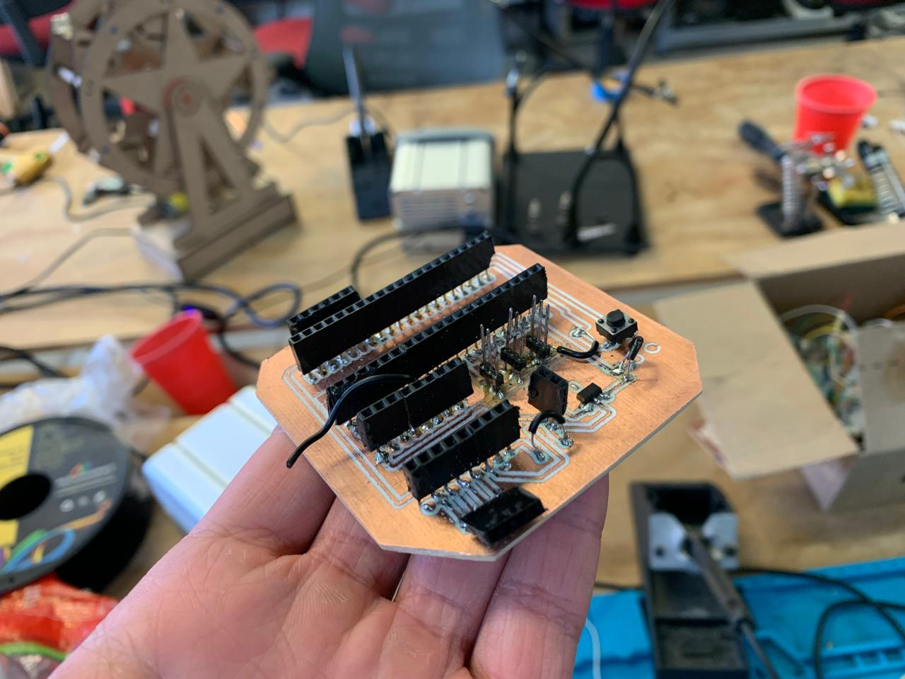
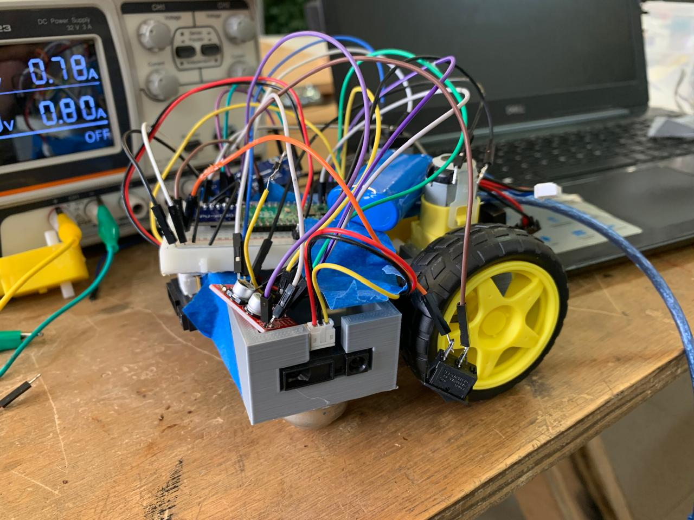
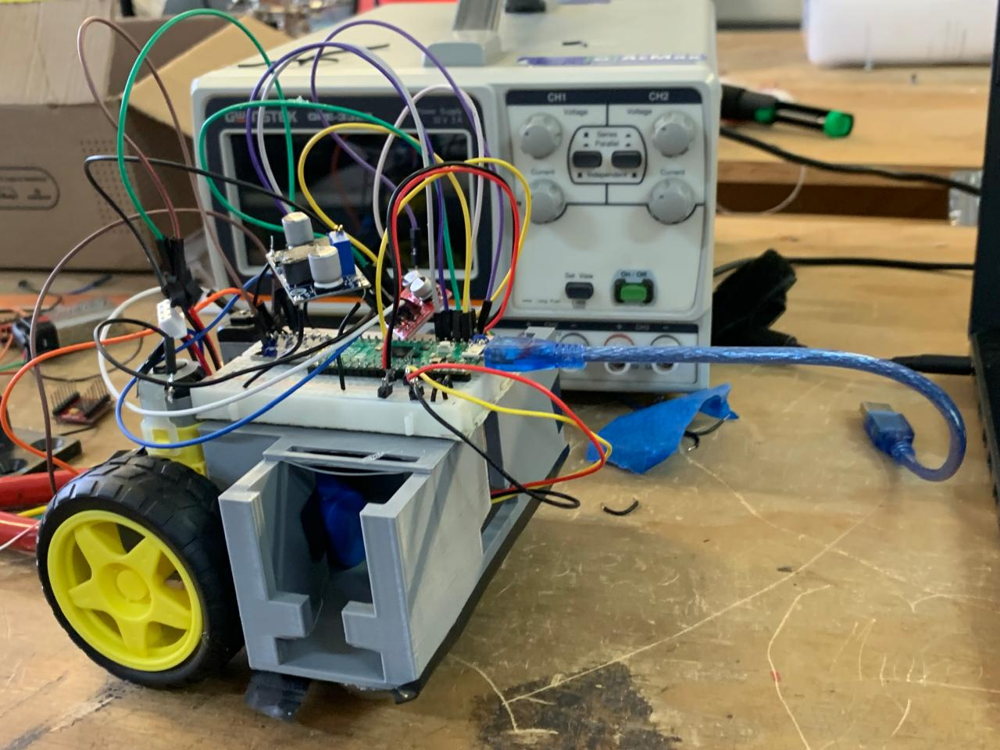

Proyecto final
El proyecto final de la materia de sistemas embebidos consiste de un robot de 12 x 12 x 12 que se puede mover por cuenta propia en un laberinto con paredes de 5 cm de alto.
Características de mi prototipo
Para la realización de mi prototipo opté por el uso de los siguientes componentes:
- Sensor Sharp 10-80 cm de tipo láser analógico.
- Motores amarillos.
- Acelerómetro MPU -6050
- Puente H MX 1508
- Switch
- Regulador de voltaje
- Pi pico 2
Complicaciones
El proyecto parecía muy fácil al inicio y por lo mismo me confié de que saldría rápido, sin embargo definitivamente fue pensado como un proyecto final por una razón, y esque existen muchas variables que pueden salir mal en la construcción de este robot, entre las cuales me enfrente a:
- Los sensores miden desde un mínimo de 10 cm, y neceisto medir desde como 2 cm.
- Mi PCB tenía problemas al utilizar el puente H.
- Un motor no se movía mientras que el otro sí, y no había ningún problema que pudieramos encontrar.
PCB


Franky Senior (el que si se sabe la de chambear)

Video (Franky senior, mi bebe, el niño pródigo)
Franky junior (un berrinchudo, no le mueve, literlamente no se mueve, lo odio, me hace llorar)

Códigos (sí, codigos en plural)
Primer Código
Este código sirve con un solo sensor para detectar adelante y cambia de dirección cuando sensa algo 10 cm adelante de él.
#include <stdio.h>
#include "pico/stdlib.h"
#include "hardware/pwm.h"
#include "hardware/adc.h"
// Pines MX1508
const uint IN1 = 2; // Antes PWM, ahora será SENTIDO (Tierra)
const uint IN2 = 3; // Antes SENTIDO, ahora será PWM
const uint IN3 = 4; // Antes PWM, ahora será SENTIDO (Tierra)
const uint IN4 = 5; // Antes SENTIDO, ahora será PWM
// PWM
const uint16_t PWM_WRAP = 1000; // 0..1000
// Velocidad de ambos motores
const uint16_t DUTY_A = 700; // Motor A
const uint16_t DUTY_B = 1400; // Motor B
// Sharp en GP28 (ADC2)
const uint SHARP_PIN = 28;
const uint SHARP_ADC_CHANNEL = 2;
// Umbral aproximado para ~10 cm
uint16_t THRESHOLD_ADC = 2000;
// ========= Funciones auxiliares =========
void set_pwm_level(uint gpio, uint16_t level) {
if (level > PWM_WRAP) level = PWM_WRAP;
uint slice = pwm_gpio_to_slice_num(gpio);
pwm_set_chan_level(slice, pwm_gpio_to_channel(gpio), level);
}
// Lee el Sharp promediando varias muestras
uint16_t read_sharp_adc() {
const int N = 10;
uint32_t acc = 0;
for (int i = 0; i < N; i++) {
acc += adc_read();
sleep_us(200);
}
return (uint16_t)(acc / N);
}
int main() {
stdio_init_all();
// ===== CAMBIO DE SENTIDO AQUI =====
// Ahora IN2 y IN4 serán los pines PWM
gpio_set_function(IN2, GPIO_FUNC_PWM);
gpio_set_function(IN4, GPIO_FUNC_PWM);
uint sliceA = pwm_gpio_to_slice_num(IN2);
uint sliceB = pwm_gpio_to_slice_num(IN4);
pwm_set_wrap(sliceA, PWM_WRAP);
pwm_set_wrap(sliceB, PWM_WRAP);
pwm_set_enabled(sliceA, true);
pwm_set_enabled(sliceB, true);
// Pines de sentido (ahora IN1 e IN3 serán Tierra/0)
gpio_init(IN1); gpio_set_dir(IN1, GPIO_OUT);
gpio_init(IN3); gpio_set_dir(IN3, GPIO_OUT);
// Arrancar parados (ponemos los pines de sentido a 0)
gpio_put(IN1, 0);
gpio_put(IN3, 0);
set_pwm_level(IN2, 0);
set_pwm_level(IN4, 0);
// ===== ADC Sharp =====
adc_init();
adc_gpio_init(SHARP_PIN);
adc_select_input(SHARP_ADC_CHANNEL);
sleep_ms(1000);
while (true) {
// Adelante (en sentido invertido)
// Mantenemos IN1 e IN3 en 0
gpio_put(IN1, 0);
gpio_put(IN3, 0);
// Encender motores aplicando PWM a IN2 e IN4
set_pwm_level(IN2, DUTY_A);
set_pwm_level(IN4, DUTY_B);
// Queremos avanzar hasta 6 s,
// pero revisando el Sharp cada 50 ms
const uint32_t MOVE_TIME_MS = 6000;
const uint32_t STEP_MS = 50;
uint32_t elapsed = 0;
while (elapsed < MOVE_TIME_MS) {
adc_select_input(SHARP_ADC_CHANNEL);
uint16_t val = read_sharp_adc();
if (val > THRESHOLD_ADC) {
// Objeto a ~10 cm -> detener motores inmediatamente
set_pwm_level(IN2, 0);
set_pwm_level(IN4, 0);
break;
}
sleep_ms(STEP_MS);
elapsed += STEP_MS;
}
// Asegurar que esté parado y esperar 3 s
set_pwm_level(IN2, 0);
set_pwm_level(IN4, 0);
sleep_ms(3000);
}
return 0;
}
Segundo Código
#include <stdio.h>
#include "pico/stdlib.h"
#include "hardware/pwm.h"
#include "hardware/adc.h"
// Pines MX1508 (Configuración invertida como pediste)
const uint IN1 = 2; // SENTIDO (Tierra)
const uint IN2 = 3; // PWM
const uint IN3 = 4; // SENTIDO (Tierra)
const uint IN4 = 5; // PWM
// PWM
const uint16_t PWM_WRAP = 1000; // 0..1000
// Velocidad de ambos motores
const uint16_t DUTY_A = 700; // Motor A (Izquierdo)
const uint16_t DUTY_B = 1000; // Motor B (Derecho)
// Sharp en GP28 (ADC2)
const uint SHARP_PIN = 28;
const uint SHARP_ADC_CHANNEL = 2;
// Umbral aproximado para ~10 cm
uint16_t THRESHOLD_ADC = 2000;
// Tiempo que dura el giro (ajusta esto si gira mucho o muy poco)
const uint32_t TIEMPO_GIRO_MS = 600;
// ========= Funciones auxiliares =========
void set_pwm_level(uint gpio, uint16_t level) {
if (level > PWM_WRAP) level = PWM_WRAP;
uint slice = pwm_gpio_to_slice_num(gpio);
pwm_set_chan_level(slice, pwm_gpio_to_channel(gpio), level);
}
// Lee el Sharp promediando varias muestras
uint16_t read_sharp_adc() {
const int N = 10;
uint32_t acc = 0;
for (int i = 0; i < N; i++) {
acc += adc_read();
sleep_us(200);
}
return (uint16_t)(acc / N);
}
int main() {
stdio_init_all();
// ===== CONFIGURACIÓN MOTORES (IN2/IN4 PWM) =====
gpio_set_function(IN2, GPIO_FUNC_PWM);
gpio_set_function(IN4, GPIO_FUNC_PWM);
uint sliceA = pwm_gpio_to_slice_num(IN2);
uint sliceB = pwm_gpio_to_slice_num(IN4);
pwm_set_wrap(sliceA, PWM_WRAP);
pwm_set_wrap(sliceB, PWM_WRAP);
pwm_set_enabled(sliceA, true);
pwm_set_enabled(sliceB, true);
// Pines de sentido a Tierra (0)
gpio_init(IN1); gpio_set_dir(IN1, GPIO_OUT);
gpio_init(IN3); gpio_set_dir(IN3, GPIO_OUT);
gpio_put(IN1, 0);
gpio_put(IN3, 0);
set_pwm_level(IN2, 0);
set_pwm_level(IN4, 0);
// ===== ADC Sharp =====
adc_init();
adc_gpio_init(SHARP_PIN);
adc_select_input(SHARP_ADC_CHANNEL);
sleep_ms(1000);
while (true) {
// --- 1. AVANZAR ---
gpio_put(IN1, 0);
gpio_put(IN3, 0);
set_pwm_level(IN2, DUTY_A);
set_pwm_level(IN4, DUTY_B);
const uint32_t MOVE_TIME_MS = 6000;
const uint32_t STEP_MS = 50;
uint32_t elapsed = 0;
bool obstaculo_detectado = false;
while (elapsed < MOVE_TIME_MS) {
adc_select_input(SHARP_ADC_CHANNEL);
uint16_t val = read_sharp_adc();
if (val > THRESHOLD_ADC) {
obstaculo_detectado = true;
break; // Romper el ciclo de avance
}
sleep_ms(STEP_MS);
elapsed += STEP_MS;
}
// --- 2. SI HAY OBSTÁCULO: GIRAR A LA DERECHA ---
if (obstaculo_detectado) {
// A) Parar brevemente (para no quemar motores por inercia)
set_pwm_level(IN2, 0);
set_pwm_level(IN4, 0);
sleep_ms(200);
// B) Girar a la derecha
// Dejamos Motor A (IN2) encendido y apagamos Motor B (IN4)
set_pwm_level(IN2, DUTY_A);
set_pwm_level(IN4, 0);
sleep_ms(TIEMPO_GIRO_MS);
// C) Parar giro
set_pwm_level(IN2, 0);
set_pwm_level(IN4, 0);
sleep_ms(200);
// D) 'continue' fuerza a reiniciar el while(true) ARRIBA
// así el robot avanza inmediatamente sin esperar los 3 segundos.
continue;
}
// --- 3. SI SE ACABÓ EL TIEMPO (6s) SIN CHOCAR ---
set_pwm_level(IN2, 0);
set_pwm_level(IN4, 0);
sleep_ms(3000);
}
return 0;
}
## Reflexiones finales
Hubiera podido llegar a más si no fuera porque tenía muchos otros proyectos y exámenes, otros factores que intervinieron:
- Mi equipo no se presentó a trabajar más que un día.
- Mi equipo no se presentó a trabajar más que un día.
- Y por último pero no menos importante, mi equipo solo se presentó a trabajar un día.
Gracias por su atención.